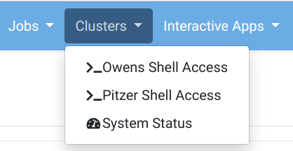
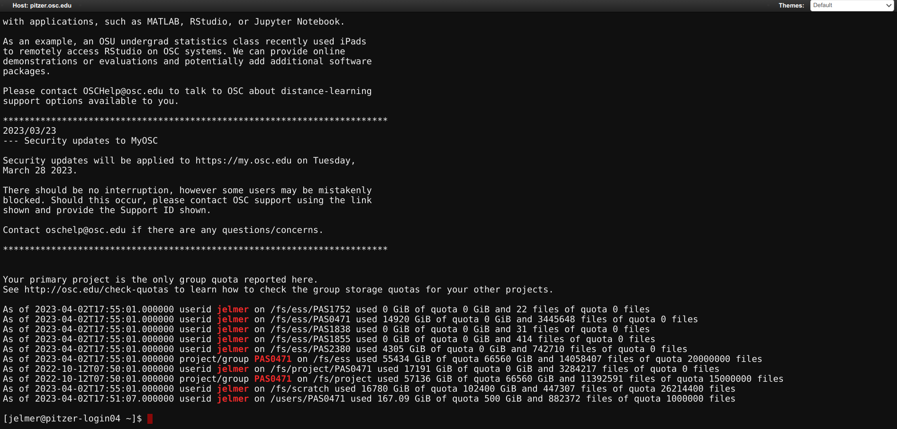
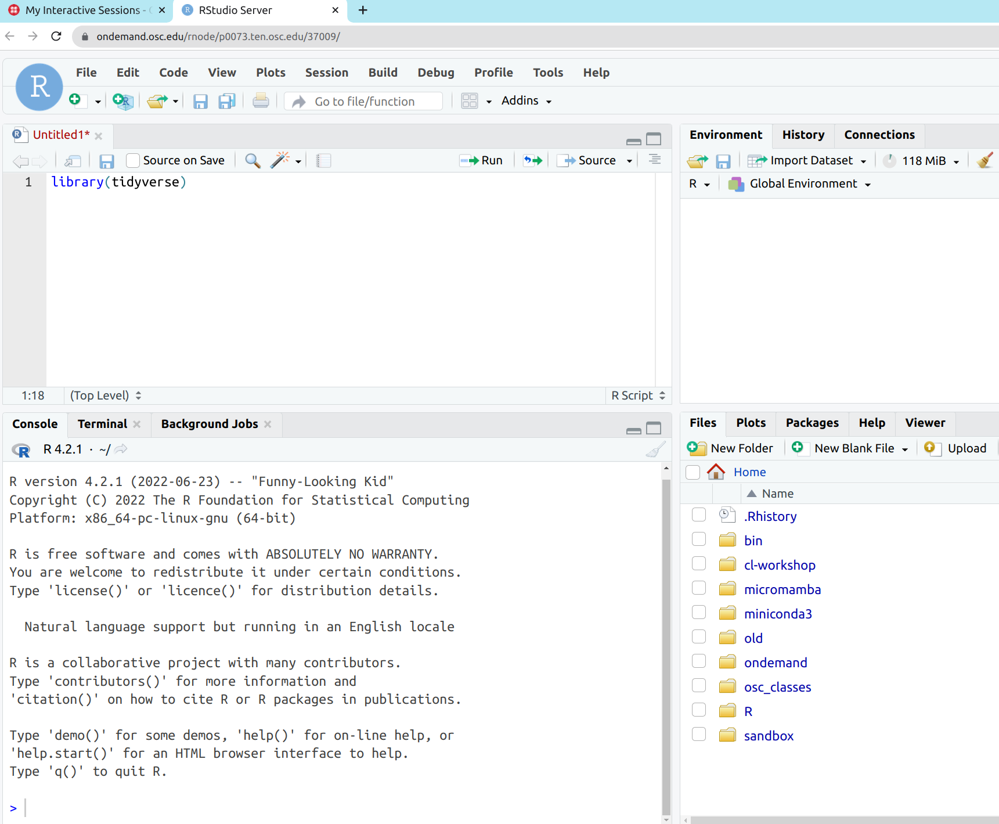
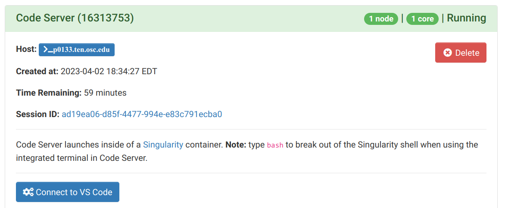
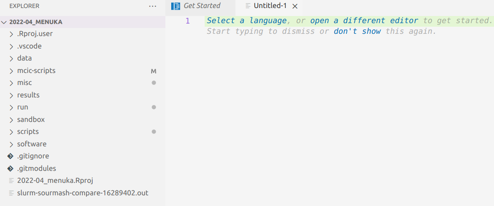

Command-line genomics
MCIC Wooster, OSU
2023-04-04
What I’ll talk about today
Today, I will give an overview of a typical computational environment/ infrastructure used for all kinds of genomics projects.
Of course, I won’t have time to teach you the different components, but I would like to orient you on this topic so that it’s not as much of a black box as it may seem now.
This will hopefully give you a starting point for learning more – and I will point you to some specific resources as well.
What kind of research is this talk relevant for?
Any project in which you generate high-throughput sequencing data, e.g.:
Whole-genome sequencing – de novo assembly, pangenomics, “resequencing”
Reduced-representation sequencing (GBS, etc) for population genomics
Microbiomics – both shotgun metagenomics and amplicon metabarcoding
Transcriptomics with RNAseq
- Other genomics projects like comparative genomics with publicly available genomes.
- But only to some extent to proteomics and metabolomics.
Overview
Introduction
Command-line genomics?
Ohio Supercomputer Center (OSC) overview
Command-line software
The VS Code editor and the whole game
A typical computational infrastructure for genomics
A supercomputer – in our case, the Ohio Supercomputer Center (OSC)
(Cloud computing is an alternative, but won’t be covered today)The Unix shell (AKA the terminal)
A text editor – I recommend and will demonstrate VS Code
A typical computational infrastructure for genomics
A supercomputer – in our case, the Ohio Supercomputer Center (OSC)
(Cloud computing is an alternative, but won’t be covered today)The Unix shell (AKA the terminal)
A text editor – I recommend and will demonstrate VS Code
Command-line genomics
For the purposes of this talk, I will refer to working with the above elements by running command-line programs as “batch jobs” (non-interactively) as command-line genomics.
A typical computational infrastructure for genomics
A supercomputer – in our case, the Ohio Supercomputer Center (OSC)
(Cloud computing is an alternative, but won’t be covered today)The Unix shell (AKA the terminal)
A text editor – I recommend and will demonstrate VS Code
Command-line genomics
For the purposes of this talk, I will refer to working with the above elements by running command-line programs as “batch jobs” (non-interactively) as command-line genomics.
- R or perhaps Python for interactive statistical analysis and visualization.
(I won’t talk more about this other than showing you how you can use R at OSC)
What is a supercomputer?
A highly interconnected set of many computer processors and storage units. You can think of it simply as a network of computers.
Supercomputers are also commonly referred to as High-Performance Computing (HPC) clusters or simply compute clusters.
Why do I need a supercomputer?
Your genomics dataset is likely to be too large to be handled efficiently, or even at all, by a laptop or desktop computer.
To speed up long-running analyses by using more computing power.
To speed up analyses where some part needs be repeated many times, like the independent mapping of reads for different samples to a reference genome.
It’s also a great place to store large amounts of data
What is the Unix shell?
A computer’s shell is also referred to as a Terminal or “the command line”, and allows you to interact with your computer by typing commands rather than pointing-and-clicking.
The Unix shell is the shell of Unix-based computers, which include Mac and Linux (but not Windows) operating systems.1
Why do I need to work in the Unix shell?
A genomics project usually involves sequentially running a whole array of bioinformatics programs (or “tools”).
For instance, an RNAseq project may include:
raw read QC => raw read trimming => trimmed read mapping => gene counting
- Many of these tools can only be run through a “command-line interface” (CLI)
Why do I need to work in the Unix shell?
A genomics project usually involves sequentially running a whole array of bioinformatics programs (or “tools”).
For instance, an RNAseq project may include:
raw read QC => raw read trimming => trimmed read mapping => gene counting
Many of these tools can only be run through a “command-line interface” (CLI)
Even those that have a “graphical user interface” (GUI) are more efficiently and reproducibly run through a CLI:
Efficiency: A CLI allows you to write a simple loop to run it in the same way for many samples. (In combination with the computing power of a supercomputer, this in turn allows you to process those hundreds of samples in parallel.)
Reproducibility: You can easily save all commands and scripts which would allow you to rerun a project rather straightforwardly.
How/when can I avoid all of this?
If you will often do genomics projects like the ones mentioned above, it’s hard to avoid command line genomics as described.
But here are some conditions in which you might reasonably avoid it:
You’re doing a single genomics project, your main research focus is elsewhere
You have data which can be analyzed with no or a relatively small command-line-based part, such as proteomics/metabolomics/metabarcoding/RNAseq.
In such cases, you might be able to get someone else to do the command line work, or you could try Galaxy, a cloud-based bioinformatics platform with a web browser interface and no coding.
Overview
Introduction
Command-line genomics?
Ohio Supercomputer Center (OSC) overview
Command-line software
The VS Code editor and the whole game
The Ohio Supercomputer Center (OSC)
The Ohio Supercomputer Center (OSC) provides computing resources to researchers (and others) across Ohio.
OSC has two individual supercomputers/clusters (named Owens and Pitzer), and lots of infrastructure for their usage.
Research usage is charged but at heavily subsidized rates, and most or all OSU colleges absorb these costs at the college level (!)
Educational usage is entirely free, like for the
PAS2250project you have been added to for this lecture.
Supercomputer overview
OSC OnDemand
The OSC OnDemand web portal allows you to access OSC resources through a web browser, such as:
A file browser where you can also create and rename folders and files, and download and upload files. 1
A Unix shell
More than a dozen different “Interactive Apps”, or programs with a GUI, such as RStudio, Jupyter, QGIS, and more.
(Project and user management goes through a separate website, https://my.osc.edu.)
Connecting to OSC with OnDemand
- Go to https://ondemand.osc.edu, and log in with your OSC credentials.
OnDemand “Files” menu
Choose a folder as a starting point for the file browser:

OnDemand “Files” menu
Here you can view, create and rename folders and files, and download and upload files:

OnDemand “Clusters” menu
Here you can access a Unix shell on either of the two clusters:

(Since the two clusters share the file systems, and they have fairly similar capabilities, it generally doesn’t matter which cluster you connect to).
OnDemand “Clusters” menu: Shell
When you click on one of the shell options, a new browser tab with a shell will open. There are some welcome messages, and some storage usage/quota info, and then you get a prompt to type commands:

OnDemand “Clusters” menu: System Status
If you click on “System status”, you’ll get an overview of the current usage of the two clusters:
OnDemand “Interactive Apps” menu
Here you can mostly access programs with a GUI that will run on a compute node. We’ll try Code Server and RStudio Server.
OnDemand “Interactive Apps” menu: RStudio Form
Fill out this form to start an RStudio session. This will run on a compute node and is therefore charged: for that reason, it needs the OSC account number so as to bill the correct account.
OnDemand Interactive Apps: RStudio
Once that top bar below is green and says “Running”, you can click “Connect to RStudio Server” way at the bottom:
OnDemand Interactive Apps: RStudio
Now, you’ll have RStudio running in your browser!
It looks identical to the Desktop App version:

What is different at OSC / on a supercomputer?
(That is, even compared to command-line computing on a personal Linux computer.)
Software
Because you don’t have administrator rights, and because the system is shared by so many people, you can’t install and use software “the regular way”For system-wide installed software, load it with
modulecommands.If something is not installed, ask OSC or use Conda or containers.
- Login versus compute nodes (node ≈ computer)
“Login nodes”, the nodes you end up on after logging in, are not meant for heavy computing and you have to request access to “compute nodes” to run most analyses.
- “Non-interactive” usage is common, using a job scheduler (SLURM)
You submit your scripts to the SLURM queue and monitor the resulting jobs.
Overview
Introduction
Command-line genomics?
Ohio Supercomputer Center (OSC) overview
Command-line software
The VS Code editor and the whole game
An example of a command-line program
A useful example of a genomics tool with a CLI is FastQC, a program for quality control of FASTQ files.
It is ubiquitous because nearly all high-throughput sequencing data comes in FASTQ files, and your first step is always to check the quality of the reads.
FastQC produces visualizations and assessments of aspects of your reads such as adapter content, and, as shown below, per-base quality:


Running FastQC
To run FastQC, you use the command
fastqc.Command-line programs are typically run non-interactively, so we don’t fire up the program first, and tell it what to do later, like we would with a program with a GUI.
Instead, we at once issue a complete set of instructions for the program to do what we would like it to.
For example, say we want to analyze one of the FASTQ files that I put in
/fs/scratch/PAS2250/data, with default FastQC settings. In that case, our complete FastQC command would be:So, it is simply
fastqcfollowed by a space and the name of the file!
Loading the FastQC “module” at OSC
FastQC is available to us at OSC1, but we first have to load it. Here is what happens when we try to run the program in a fresh shell session at OSC:
We can load the software as follows:
Now, let’s try again:
[jelmer@owens-login04 ~]$ fastqc /fs/scratch/PAS2250/data/sample1.fastq.gz #> Started analysis of sample1.fastq.gz #> Approx 5% complete for sample1.fastq.gz #> Approx 10% complete for sample1.fastq.gz #> Approx 15% complete for sample1.fastq.gz #> [truncated]Success!
Something is missing here
I mentioned earlier that one benefit of running programs at the command-line is reproducibility – but how do we save the commands that we run?
We need to not just save them, but to keep a detailed digital notebook that will enable us to redo our analysis.
We also need to wrap these commands in little scripts, so that we can run programs non-interactively and in parallel.
For all of this, we will need a good text editor.
Overview
Introduction
Command-line genomics?
Ohio Supercomputer Center (OSC) overview
Command-line software
The VS Code editor and the whole game
The VS Code text editor
VS Code (in full, “Visual Studio Code”) is a great modern GUI-based text editor. 1
We can use a version of this editor (often referred to as Code Server) directly in our browser via the OSC OnDemand website.
I do the vast majority of my bioinformatics work using VS Code at OSC. Because it also has an integrated terminal to access a Unix shell, this effectively combines 3 of the 4 mentioned aspects of the genomics computational environment:
- Supercomputer
- Unix shell
- Text editor
That is, all except R, for which I prefer RStudio. 2
Starting up VS Code in OnDemand
- Log in to OSC’s OnDemand portal at https://ondemand.osc.edu.
- In the blue top bar, select
Interactive Appsand then near the bottom of the dropdown menu, clickCode Server. - In the form that appears on a new page:
- Select project
PAS2250 - No need to change “Number of hours” and “Working Directory”
- Make sure the “Codeserver Version” is
4.8.
- Select project
- On the next page, once the top bar of the box has turned green and says
Runnning, clickConnect to VS Code.
Starting up VS Code in OnDemand

Starting up VS Code in OnDemand
Once the session is running, you can click “Connect to VS Code”:

VS Code Basics: Side bar with file browser

VS Code Basics: Editor pane
The main part of the VS Code is the editor pane.
Whenever you open VS Code, a editor pane tab with a Get Started document is automatically opened.
We can use this Get Started document to open a new text file by clicking New file below Start, which opens as a second tab in the editor pane.

VS Code Basics: Terminal
You can open a terminal with a Unix shell by clicking => Terminal => New Terminal. The great thing with this setup is that we can keep notes and write shell scripts in the same window as our shell and a file browser!
The whole game: building on the FastQC example
I’ve shown you the main pieces of the computational infrastructure for
“command-line genomics”:
- A supercomputer
- The Unix shell,
- A text editor – which actually ties all three together
We’ve seen a very basic example of loading and running a command-line tool at OSC.
The whole game: building on the FastQC example
The missing pieces for a fuller example of how such tools are run in the context of an actual genomics project are (if we stay with FastQC):
- Putting the command to run FastQC in a “shell script”.
(This used the same language (Bash) as the commands you’d type interactively, so at its most basic this involves pasting those commands into a text file.)
- Submitting the script to the SLURM scheduler queue as a “batch job”.
(At its most basic, this involves puttingsbatchin front of the script name.)
- To make use of the capabilities of the supercomputer and speeding up our analysis, we can submit multiple jobs in parallel using a loop.
So what computational skills should I learn?
The core skills:
Unix shell basics – the commonly used commands
Some shell scripting basics
SLURM basics to submit and manage your batch jobs
R for “downstream”, statistical and visualization tasks
When you start doing genomics projects more often:
Using
condaor containers for softwareUnix data tools (
grep,sed,awk, etc)When you want to become proficient in applied bioinformatics:
Version control with
gitMore advanced: formal workflow/pipeline management tools (e.g.
Nextflow)More advanced: Python (or advanced R) for custom data processing
Resources for further learning: OSC
- Tutorials and courses!
- OSC regularly has online introductory sessions, both overviews and more hands-on sessions – see the OSC Events page: https://www.osc.edu/events.
They also have weekly office hours.
- There is also some good introductory material at their Getting Started pages (https://www.osc.edu/resources/getting_started), as well as more specific “HOWTO” pages (https://www.osc.edu/resources/getting_started/howto).
Resources for further learning: OSU
OSU courses and workshops
Jonathan Fresnedo Ramirez’s “Genome Analytics” course (
HCS 7004)Microbiome Informatics (
MICRBIO 8161)The online materials for the workshop “Command line basics for genomic analysis at OSC” that myself and Mike Sovic gave last August:
https://mcic-osu.github.io/cl-workshop-22/I have a course “Practical Computing Skills for Omics Data” (
PLNTPTH 5006) that I am planning to teach in in Spring 2024. All materials for the 2021 version of this course (“Practical Computing Skills for Biologists”) are at: https://mcic-osu.github.io/pracs-sp21/
Resources for further learning: OSU
Some particularly useful books:
The Linux Command Line (William Shotts, 2019)
Bioinformatics Data Skills (Vince Buffalo, 2015)
Computing Skills for Biologists: A Toolbox (Wilmes & Allesino, 2019)
A Primer for Computational Biology (Shawn T. O’ Neil, 2019) https://open.oregonstate.education/computationalbiology/
MCIC bioinformatics assistance
Any questions?
Submitting FastQC batch jobs
Due to time constraints, I have skipped over the details of these steps. But an example shell script to run FastQC can be found at /fs/scratch/PAS2250/scripts/fastqc.sh, which contains the following code:
Indicate it’s a Bash script and tell SLURM which OSC account to use
Strict settings make the script stop on failure
The script takes “arguments”, which are stored as placeholder variables
$1and$2. This allows us to run the script for different files
Submitting FastQC batch jobs
Here is how I would submit that script as a batch job to analyze one FASTQ file:
fastq_file=/fs/scratch/PAS2250/data/sample1.fastq.gz
sbatch /fs/scratch/PAS2250/scripts/fastqc.sh "$fastq_file" results_jelmer
#> Submitted batch job 16323144And how you can loop over all FASTQ files to submit as many jobs in parallel as you have FASTQ files:
for fastq_file in /fs/scratch/PAS2250/data/*.fastq.gz; do
sbatch /fs/scratch/PAS2250/scripts/fastqc.sh "$fastq_file" results_jelmer
done
#> Submitted batch job 16323145
#> Submitted batch job 16323146
#> Submitted batch job 16323147
#> Submitted batch job 16323148
#> Submitted batch job 16323149
#> Submitted batch job 16323110
#> Submitted batch job 16323111
#> Submitted batch job 16323112